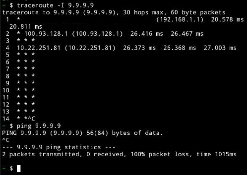
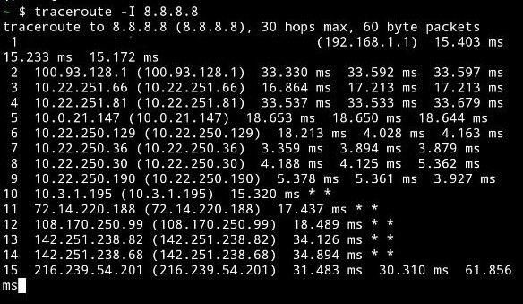

Публикуем сюда интересные факты и заметки о блокировках на ТСПУ и о самом оборудовании.
Для тех случаев, когда создавать отдельную тему нецелесообразно. Без обсуждений.
2024-02-27T14:40:46.414Z
disappointed
Коллега сообщил, что с 12.32 по 14.02мск у него на мониторинге пропадал пинг до стыковых адресов аплинков (изнутри цода, через ТСПУ), при этом траф ходил и bgp не падало. Выводы однозначные.
2024-02-27T11:44:58.055Z
bolvan
Сегодня с утра тестировал ДОМРУ спб блокчеком от zapret-а.
Заметил странную аномалию
На этом провайдере целый зоопарк ТСПУ/DPI. Отчетливо проявляется load balancing.
- checking nfqws --dpi-desync=fake,disorder2 --dpi-desync-split-pos=1 --dpi-desync-ttl=9
[attempt 1] curl: (28) Operation timed out after 3000 milliseconds with 0 bytes received
[attempt 2] AVAILABLE
[attempt 3] AVAILABLE
[attempt 4] AVAILABLE
[attempt 5] AVAILABLE
[attempt 6] AVAILABLE
[attempt 7] AVAILABLE
[attempt 8] AVAILABLE
[attempt 9] curl: (28) Operation timed out after 3000 milliseconds with 0 bytes received
[attempt 10] curl: (28) Operation timed out after 3000 milliseconds with 0 bytes received
UNAVAILABLE code=28
И так на большинстве стратегий. С большим или меньшим failure rate.
Но если к этому добавить MD5SIG, то картинка резко “белеет”.
Этот паттерн повторяется из стратегии к стратегии.
Где TTL или badseq/badsum плохо вытягивают, md5sig ставит в вопросе точку
- checking nfqws --dpi-desync=fake,disorder2 --dpi-desync-fooling=md5sig
[attempt 1] AVAILABLE
[attempt 2] AVAILABLE
[attempt 3] AVAILABLE
[attempt 4] AVAILABLE
[attempt 5] AVAILABLE
[attempt 6] AVAILABLE
[attempt 7] AVAILABLE
[attempt 8] AVAILABLE
[attempt 9] AVAILABLE
[attempt 10] AVAILABLE
!!!!! AVAILABLE !!!!!
Впечатление, что по крайней мере на части DPI специально сделали детект BGP через наличие MD5 и вайтлистинг всей TCP сессии
2024-02-27T14:22:46.624Z
anonimnyj24(anonimnyj24)
Сегодня днём, когда весь интернет отвалился с ~12:50 до ~14:00 по МСК, заметил вот какие вещи, причём как на проводном интернете Уфанет, так и на мобильном ростелекоме, поведение было одинаковым:
Включили белые списки
ICMP не ходил ни в одно направление, трассировка не выходила из сети провайдера. Большая часть DNS серверов была недоступна.

На ТСПУ DNS сервера гугла 8.8.8.8, 8.8.4.4 находятся в белом списке, к ним можно было подключится, трассировки и ICMP к ним ходили

Меня очень выручил DNS туннель через рекурсивные DNS гугла (8.8.8.8, 8.8.4.4)
Все TCP соединения в основном сбрасывались через RST флаг
При попытке подключится к остальным сайтам TCP соединение сбрасывалось RST флагом
К зарубежному серверу ip-api.com я смог подключится, подключаясь к нему как к yandex.ru:
~ $ curl --resolve yandex.ru:443:208.95.112.1 https://yandex.ru --insecure -v
* Added yandex.ru:443:208.95.112.1 to DNS cache
* Hostname yandex.ru was found in DNS cache
* Trying 208.95.112.1:443...
* Connected to yandex.ru (208.95.112.1) port 443
* ALPN: curl offers h2,http/1.1
* TLSv1.3 (OUT), TLS handshake, Client hello (1):
* TLSv1.3 (IN), TLS handshake, Server hello (2):
* TLSv1.2 (IN), TLS handshake, Certificate (11):
* TLSv1.2 (IN), TLS handshake, Server finished (14):
* TLSv1.2 (OUT), TLS handshake, Client key exchange (16):
* TLSv1.2 (OUT), TLS change cipher, Change cipher spec (1):
* TLSv1.2 (OUT), TLS handshake, Finished (20):
* TLSv1.2 (IN), TLS handshake, Finished (20):
* SSL connection using TLSv1.2 / AES256-SHA / UNDEF / UNDEF
* ALPN: server accepted http/1.1
* Server certificate:
* subject: CN=*.ip-api.com
* start date: Dec 21 00:00:00 2023 GMT
* expire date: Jan 20 23:59:59 2025 GMT
* issuer: C=GB; ST=Greater Manchester; L=Salford; O=Sectigo Limited; CN=Sectigo RSA Domain Validation Secure Server CA
* SSL certificate verify result: unable to get local issuer certificate (20), continuing anyway.
* Certificate level 0: Public key type RSA (2048/112 Bits/secBits), signed using sha256WithRSAEncryption
* Certificate level 1: Public key type RSA (2048/112 Bits/secBits), signed using sha384WithRSAEncryption
* Certificate level 2: Public key type RSA (4096/152 Bits/secBits), signed using sha384WithRSAEncryption
* using HTTP/1.x
> GET / HTTP/1.1
> Host: yandex.ru
> User-Agent: curl/8.5.0
> Accept: */*
>
< HTTP/1.1 403 Forbidden
< Date: Tue, 27 Feb 2024 10:27:50 GMT
< Content-Type: text/plain; charset=utf-8
< Content-Length: 163
< Access-Control-Allow-Origin: *
< X-Ttl: 60
< X-Rl: 44
<
{
"status" : "fail",
"message": "SSL unavailable for this endpoint, order a key at https://members.ip-api.com/"
}
* Connection #0 to host yandex.ru left intact
v2ray работал по TLS на 443 порту, когда я указал SNI vk.com
dig +trace yandex.ru не работал, авторитетные DNS сервера были недоступны
Попытка подключится к SSH по TCP-портам 53, 179 приводили к сбросу соединения
2024-02-27T14:58:18.907Z
anon60595749
По моему опыту, на провайдерах без DPI, но с ТСПУ (у самого ISP или выше - не важно), блокировка работает молча - без отправки TCP с поднятым RST-флагом. Например, в случае TCP-сессии с обычным TLS просто перестает ходить трафик, когда ТСПУ замечает запрещенный SNI. Так что это необычно, что во время проблемы прилетал RST. Хотя сам подтверждаю это.
Не уверен, что проверил все, но те что посмотрел не имели проблем с ICMP сегодня.
2024-02-27T15:27:36.099Z
anonimnyj24(anonimnyj24)
По началу RST вообще не прилетал, в обоих сетях, потом спустя несколько минут RST стал присылаться в обоих сетях.
2024-02-27T15:30:56.531Z
koderr
Прошедшей ночью заметил, что отваливается сессия ssh до DigitalOcean на нестандартном порту. Приходит RST с бо́льшим чем у остальных пакетов TTL, я так понимаю это верный признак ТСПУ. ssh на стандартном порту или, скажем, до vps YandexCloud в Мск не отваливается. Или через gost-овский tls-туннель до того же сервера на DigitalOcean — тоже не отваливается.
2024-07-26T09:00:07.869Z
Anyuta1166
Неделю находилась в Казахстане, пыталась удаленно подключаться к домашней сети в Москве.
Это просто мучение.
OpenVPN блокируется на направление из-за рубежа в Россию. Но немножко по-другому. Сначала дает несколько минут поработать до блокировки соединения. С каждой попыткой время все уменьшается и уменьшается до нуля.